ДВИГАТЕЛЬ В СБОРЕ (для моделей без DPF) > СНЯТИЕ |
| 1. ОТСОЕДИНИТЕ ПРОВОД ОТ ОТРИЦАТЕЛЬНОГО ВЫВОДА АККУМУЛЯТОРНОЙ БАТАРЕИ |
| 2. СНИМИТЕ КАПОТ В СБОРЕ |
Отсоедините шланг форсунки омывателя.
 |
Выверните 8 болтов и снимите капот.
| 3. СНИМИТЕ УЗЕЛ ВЕНТИЛЯЦИОННОЙ РЕШЕТКИ В ВЕРХНЕЙ ЧАСТИ КОЖУХА |
Снимите вентиляционную решетку в верхней части кожуха (Нажмите здесь).
| 4. СНИМИТЕ НИЖНЮЮ ОБЛИЦОВКУ ПЕРЕДНЕГО БАМПЕРА |
Освободите фиксатор, выверните 5 болтов и снимите нижнюю накладку переднего бампера.
| 5. СНИМИТЕ ЗАЩИТУ КАРТЕРА ДВИГАТЕЛЯ № 1 В СБОРЕ |
Выверните 4 болта и снимите защиту картера двигателя № 1.
| 6. СНИМИТЕ НИЖНЮЮ КРЫШКУ ТРАНСМИССИИ |
Выверните 2 болта и снимите нижнюю крышку трансмиссии.
| 7. СНИМИТЕ ЗАДНЮЮ НИЖНЮЮ КРЫШКУ ДВИГАТЕЛЯ В СБОРЕ |
Выверните 4 болта и снимите заднюю защиту картера двигателя.
| 8. СЛЕЙТЕ ОХЛАЖДАЮЩУЮ ЖИДКОСТЬ ДВИГАТЕЛЯ |
Ослабьте пробку сливного крана радиатора.
 |
Слейте охлаждающую жидкость, сняв пробку расширительного бачка, а затем с помощью ключа снимите вентиляционную пробку.
Ослабьте пробку сливного крана блока цилиндров.

| *1 | Бачок радиатора | *2 | Вентиляционная пробка |
| *3 | Пробка сливного крана радиатора | *4 | Пробка сливного крана блока цилиндров |
| 9. СЛЕЙТЕ МОТОРНОЕ МАСЛО |
Снимите крышку маслоналивной горловины.
Выверните пробку сливного отверстия масляного поддона с прокладкой, а затем слейте моторное масло в емкость.
Протрите масляный поддон и пробку сливного отверстия.
Установите новую прокладку и пробку сливного отверстия масляного поддона.
| 10. СЛЕЙТЕ МАСЛО ДЛЯ МЕХАНИЧЕСКИХ ТРАНСМИССИЙ (для моделей с механической трансмиссией) |
Снимите пробку сливного отверстия и прокладку, а затем слейте масло механической трансмиссии.
Установите новую прокладку и пробку сливного отверстия.
| 11. СЛЕЙТЕ ЖИДКОСТЬ ДЛЯ АВТОМАТИЧЕСКОЙ ТРАНСМИССИИ (для моделей с автоматической трансмиссией) |
Снимите пробку сливного отверстия и прокладку, и слейте трансмиссионную жидкость.
Установите новую прокладку и пробку сливного отверстия.
| 12. СЛЕЙТЕ ЖИДКОСТЬ ДЛЯ МЕХАНИЗМА УСИЛЕНИЯ РУЛЕВОГО УПРАВЛЕНИЯ С УСИЛИТЕЛЕМ |
| 13. СНИМИТЕ РАДИАТОР В СБОРЕ |
Снимите радиатор (Нажмите здесь).
| 14. СНИМИТЕ ПРИЖИМ АККУМУЛЯТОРНОЙ БАТАРЕИ |
Отверните 2 гайки и снимите прижимную планку аккумуляторной батареи.
| 15. СНИМИТЕ АККУМУЛЯТОРНУЮ БАТАРЕЮ |
| 16. СНИМИТЕ ЛОТОК АККУМУЛЯТОРНОЙ БАТАРЕИ |
| 17. СНИМИТЕ ШЛАНГ ВОЗДУШНОГО ФИЛЬТРА № 1 |
| 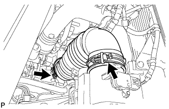 |
Ослабьте 2 зажима шланга и снимите шланг воздушного фильтра № 1.
| 18. СНИМИТЕ КРЫШКУ ВОЗДУШНОГО ФИЛЬТРА В СБОРЕ |
 |
За исключением моделей, предназначенных для эксплуатации в холодном климате:
Открепите 2 зажима и отсоедините разъем датчика массового расхода воздуха.
| *A | За исключением моделей, предназначенных для эксплуатации в холодном климате |
| *B | Для моделей, предназначенных для эксплуатации в холодном климате |
Для автомобилей, предназначенных для эксплуатации в холодном климате:
Открепите 3 зажима и отсоедините разъем датчика массового расхода воздуха.
Освободите 4 зажима и снимите крышку воздушного фильтра.
| 19. СНИМИТЕ ФИЛЬТРУЮЩИЙ ЭЛЕМЕНТ ВОЗДУШНОГО ФИЛЬТРА В СБОРЕ |
| 20. СНИМИТЕ КОРПУС ВОЗДУШНОГО ФИЛЬТРА В СБОРЕ |
 |
Выверните 3 болта и снимите корпус воздушного фильтра.
| 21. СНИМИТЕ ВЫХОДНОЙ ПАТРУБОК КОМПРЕССОРА |
 |
Отсоедините 3 зажима жгута проводов.
Выверните болт и снимите кронштейн жгута проводов.
 |
Ослабьте зажим шланга, выверните 2 болта и снимите выходной коленчатый патрубок компрессора.
| 22. СНИМИТЕ ВЯЗКОСТНЫЙ ПОДОГРЕВАТЕЛЬ С ЭЛЕКТРОМАГНИТНОЙ МУФТОЙ В СБОРЕ (для автомобилей, предназначенных для эксплуатации в холодном климате) |
Отсоедините разъем вязкостного подогревателя.
 |
Отсоедините перепускной шланг охлаждающей жидкости и шланг охлаждающей жидкости.
 |
Выверните 2 болта и снимите вязкостный подогреватель с электромагнитной муфтой.
| 23. СНИМИТЕ КРОНШТЕЙН ВЯЗКОСТНОГО ПОДОГРЕВАТЕЛЯ № 1 В СБОРЕ (для автомобилей, предназначенных для эксплуатации в холодном климате) |
 |
Выверните 4 болта и снимите кронштейн вязкостного подогревателя № 1.
| 24. ОТСОЕДИНИТЕ КОМПРЕССОР СИСТЕМЫ КОНДИЦИОНИРОВАНИЯ В СБОРЕ (для моделей с системой кондиционирования) |
| 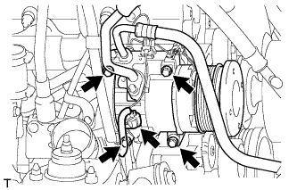 |
Отсоедините разъем компрессора.
Выверните 4 болта и отсоедините компрессор системы кондиционирования.
| 25. СНИМИТЕ КОРПУС ДРОССЕЛЬНОЙ ЗАСЛОНКИ ДИЗЕЛЬНОГО ДВИГАТЕЛЯ В СБОРЕ |
Снимите корпус дроссельной заслонки дизельного двигателя (Нажмите здесь).
| 26. СНИМИТЕ ТОПЛИВНЫЙ ФИЛЬТР В СБОРЕ |
Снимите топливный фильтр (Нажмите здесь).
| 27. ОТСОЕДИНИТЕ МАСЛЯНЫЙ БАЧОК ЛОПАСТНОГО НАСОСА В СБОРЕ |
 |
Выверните 3 болта и отсоедините масляный бачок лопастного насоса.
| 28. ОТСОЕДИНИТЕ НАГНЕТАТЕЛЬНЫЙ ПАТРУБОК В СБОРЕ |
| 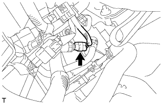 |
Отсоедините разъем датчика давления жидкости усилителя рулевого управления.
| 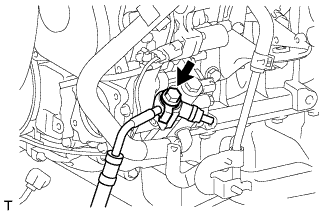 |
Снимите пустотелый болт и прокладку и отсоедините трубку подачи топлива.
| 29. ОТСОЕДИНИТЕ ВХОДНОЙ ПАТРУБОК ОТОПИТЕЛЯ |
| 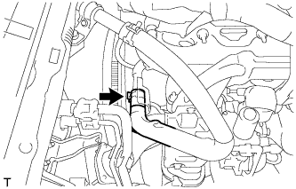 |
Отсоедините впускной патрубок отопителя.
| 30. ОТСОЕДИНИТЕ ВЫХОДНОЙ ПАТРУБОК ОТОПИТЕЛЯ |
| 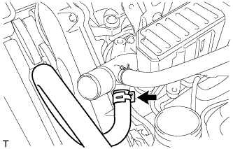 |
Отсоедините выпускной патрубок отопителя.
| 31. ОТСОЕДИНИТЕ ТОПЛИВНЫЙ ШЛАНГ |
| 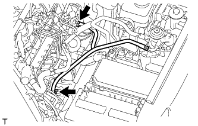 |
Отсоедините шланги № 1 и № 2.
| 32. СНИМИТЕ ДВЕРЦУ ПЕРЧАТОЧНОГО ЯЩИКА В СБОРЕ |
Снимите дверцу перчаточного ящика (Нажмите здесь).
| 33. ОТСОЕДИНИТЕ ЖГУТ ПРОВОДОВ ДВИГАТЕЛЯ |
Снимите крышку блока реле № 1.
 |
Отверните гайку и освободите 2 захвата.
| 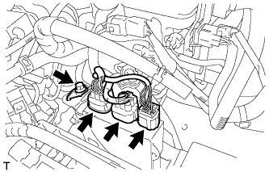 |
Отсоедините 3 разъема электронного блока привода форсунок и выверните болт.
| 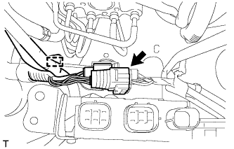 |
Отсоедините разъем и зажим.
| 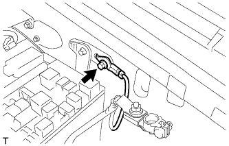 |
Выверните болт.
| 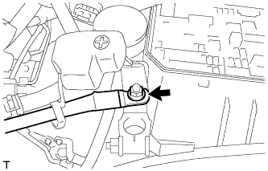 |
Отверните гайку и отсоедините жгут электропроводки двигателя.
| 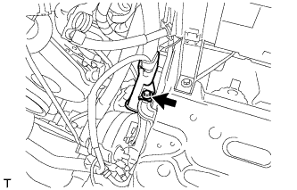 |
Выверните болт и отсоедините защиту жгута проводов.
 |
Выверните болт и отсоедините жгут электропроводки двигателя.
| *A | для моделей с KDSS |
| *B | для моделей без KDSS |
| 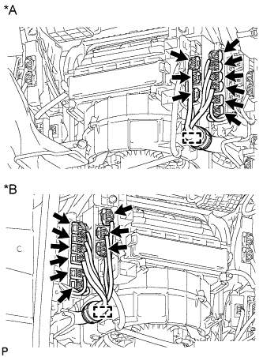 |
Расцепите зажим и отсоедините 9 разъемов.
| *A | Для моделей с левосторонним рулевым управлением |
| *B | Для моделей с правосторонним рулевым управлением |
 |
Отсоедините уплотнительную шайбу от опоры жгута проводов.
| *A | Для моделей с левосторонним рулевым управлением |
| *B | Для моделей с правосторонним рулевым управлением |
 |
Освободите 4 захвата, чтобы снять опору жгута проводов с автомобиля, а затем вытяните разъем ECM, чтобы снять его с автомобиля.
| *A | Для моделей с левосторонним рулевым управлением |
| *B | Для моделей с правосторонним рулевым управлением |
| 34. СНИМИТЕ СТАРТЕР В СБОРЕ (для моделей мощностью 2,2 кВт) |
Снимите заглушку контакта.
| 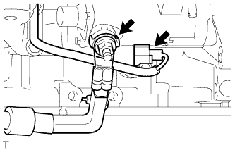 |
Отверните гайку и отсоедините провод стартера.
Отсоедините разъем стартера.
| 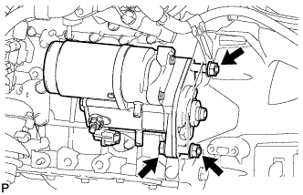 |
Для моделей с автоматической трансмиссией:
Отверните 2 гайки, выверните болт и снимите стартер.
| 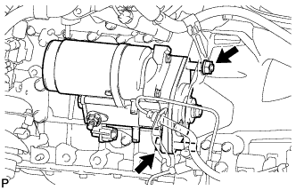 |
Для моделей с механической трансмиссией:
Выверните болт, отверните гайку и снимите стартер.
| 35. СНИМИТЕ СТАРТЕР В СБОРЕ (для моделей мощностью 2,7 кВт) |
Снимите заглушку контакта.
| 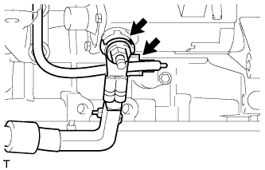 |
Отверните гайку и отсоедините провод стартера.
Отсоедините разъем стартера.
| 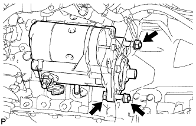 |
Для моделей с автоматической трансмиссией:
Отверните 2 гайки, выверните болт и снимите стартер.
| 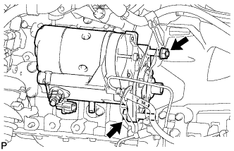 |
Для моделей с механической трансмиссией:
Выверните болт, отверните гайку и снимите стартер.
| 36. СНИМИТЕ СТАРТЕР В СБОРЕ (для моделей мощностью 3,0 кВт) |
Снимите заглушку контакта.
Отсоедините разъем стартера.
Отверните гайку и отсоедините провод стартера.
| 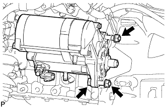 |
Отверните 2 гайки, выверните болт и снимите стартер.
| 37. СНИМИТЕ ПРИЕМНУЮ ТРУБУ В СБОРЕ |
 |
Отверните 3 гайки и снимите приемную трубу.
| *A | Для моделей с охладителем РОГ |
| *B | Для моделей без охладителя РОГ |
Снимите прокладку.
| 38. СНИМИТЕ ПЕРЕДНИЙ КАРДАННЫЙ ВАЛ В СБОРЕ |
 |
Нанесите метки на фланец карданного вала и дифференциал.
| *a | Метка |
Снимите 4 гайки, 4 болта, 4 шайбы и передний карданный вал в сборе.
 |
Нанесите метки на фланец карданного вала и фланец раздаточной коробки.
| *a | Метка |
Отверните 4 гайки и снимите 4 шайбы и передний карданный вал в сборе.
| 39. СНИМИТЕ КАРДАННЫЙ ВАЛ В СБОРЕ |
 |
Нанесите метки на фланец карданного вала и фланец раздаточной коробки.
| *A | Для 3-дверных моделей: |
| *B | Для 5-дверных моделей: |
| *a | Метка |
Отверните 4 гайки и снимите 4 шайбы.
 |
Нанесите метки на фланец карданного вала и фланец дифференциала.
| *A | Для 3-дверных моделей: |
| *B | Для 5-дверных моделей: |
| *a | Метка |
Отверните 4 гайки и снимите 4 болта и 4 шайбы.
Снимите карданный вал.
| 40. СНИМИТЕ ТЕПЛО- И ШУМОИЗОЛИРУЮЩИЙ ЭКРАН МАСЛЯНОГО ПОДДОНА |
| 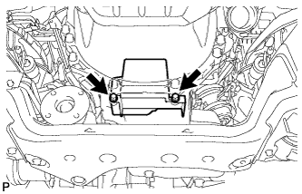 |
Выверните 2 болта и снимите тепло- и шумоизолирующий экран масляного поддона.
| 41. СНИМИТЕ МЕХАНИЧЕСКУЮ ТРАНСМИССИЮ В СБОРЕ (для моделей с механической трансмиссией) |
Снимите механическую трансмиссию (Нажмите здесь).
| 42. ВЫВЕРНИТЕ УСТАНОВОЧНЫЙ БОЛТ ВЕДУЩЕГО ДИСКА И МУФТЫ ГИДРОТРАНСФОРМАТОРА (для моделей с автоматической трансмиссией) |
| 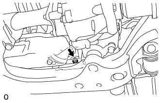 |
Проверните коленчатый вал, чтобы обеспечить доступ к 6 болтам, и, удерживая ключом болт шкива коленчатого вала, выверните каждый из болтов.
| 43. СНИМИТЕ АВТОМАТИЧЕСКУЮ ТРАНСМИССИЮ В СБОРЕ (для моделей с автоматической трансмиссией) |
Снимите автоматическую трансмиссию (Нажмите здесь).
| 44. СНИМИТЕ ЗАДНЮЮ ПОДУШКУ ОПОРЫ ДВИГАТЕЛЯ № 1 |
| 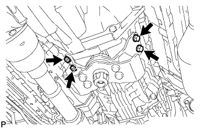 |
Выверните 4 болта и снимите заднюю подушку опоры двигателя № 1.
| 45. СНИМИТЕ ДВИГАТЕЛЬ В СБОРЕ |
 |
Установите 2 крюка для вывешивания двигателя, закрепив их 2 болтами, как показано на рисунке.
| Крюк для вывешивания двигателя № 1 | 12284-30020 |
| Крюк для вывешивания двигателя № 2 | 12282-67030 |
| Болт | 91552-81014 и 91642-81030 |
| *1 | Крюк для вывешивания двигателя № 1 |
| *2 | Крюк для вывешивания двигателя № 2 |
С помощью устройства для подъема двигателя и цепного блока подвесьте двигатель.
| 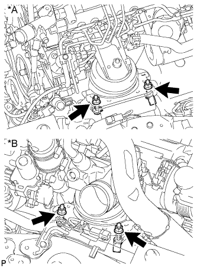 |
Выверните 4 болта и отверните 4 гайки.
| *A | Для левой стороны |
| *B | Для правой стороны |
Снимите двигатель с помощью устройства для подъема двигателя и цепного блока.
| 46. СНИМИТЕ КОЖУХ СЦЕПЛЕНИЯ В СБОРЕ (для моделей с механической трансмиссией) |
 |
Нанесите метки на кожух сцепления и маховик.
| *a | Метка |
Ослабьте все установочные болты, поочередно выворачивая их на один оборот, пока не ослабнет натяжение пружины.
Выверните 6 установочных болтов и снимите кожух сцепления.
| 47. СНИМИТЕ ВЕДОМЫЙ ДИСК СЦЕПЛЕНИЯ В СБОРЕ (для моделей с механической трансмиссией) |
| 48. СНИМИТЕ МАХОВИК В СБОРЕ (для моделей с механической трансмиссией) |
 |
Удерживайте шкив коленчатого вала с помощью SST.
Выверните 8 болтов и снимите маховик.
| 49. СНИМИТЕ ВЕДУЩИЙ ДИСК КРЫЛЬЧАТКИ НАСОСА (для моделей с автоматической трансмиссией) |
|
Удерживайте шкив коленчатого вала с помощью SST.
 |
Выверните 8 болтов и снимите заднюю распорную втулку ведущего диска, ведущий диск крыльчатки насоса и маховик с коронной шестерней.
| 50. СНИМИТЕ ЗАДНЮЮ КРЫШКУ |
Выверните болт и снимите заднюю крышку.
| 51. ЗАКРЕПИТЕ ДВИГАТЕЛЬ НА СТЕНДЕ ДЛЯ ДВИГАТЕЛЯ |
| 52. СНИМИТЕ ЖГУТ ЭЛЕКТРОПРОВОДКИ ДВИГАТЕЛЯ |
Отсоедините жгут электропроводки двигателя от двигателя.
| 53. СНИМИТЕ ПОДУШКУ ПЕРЕДНЕЙ ОПОРЫ ДВИГАТЕЛЯ |
| 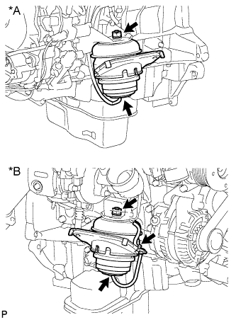 |
Отсоедините 2 патрубка.
| *A | Для левой стороны |
| *B | Для правой стороны |
Отверните 2 гайки и снимите 2 передних подушки опоры двигателя.